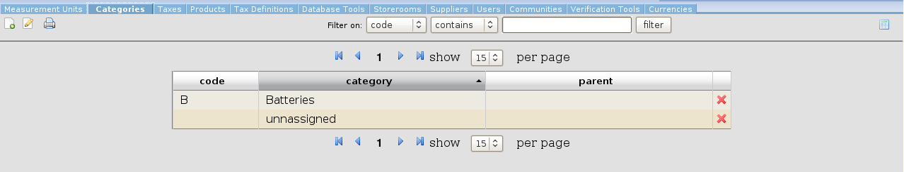
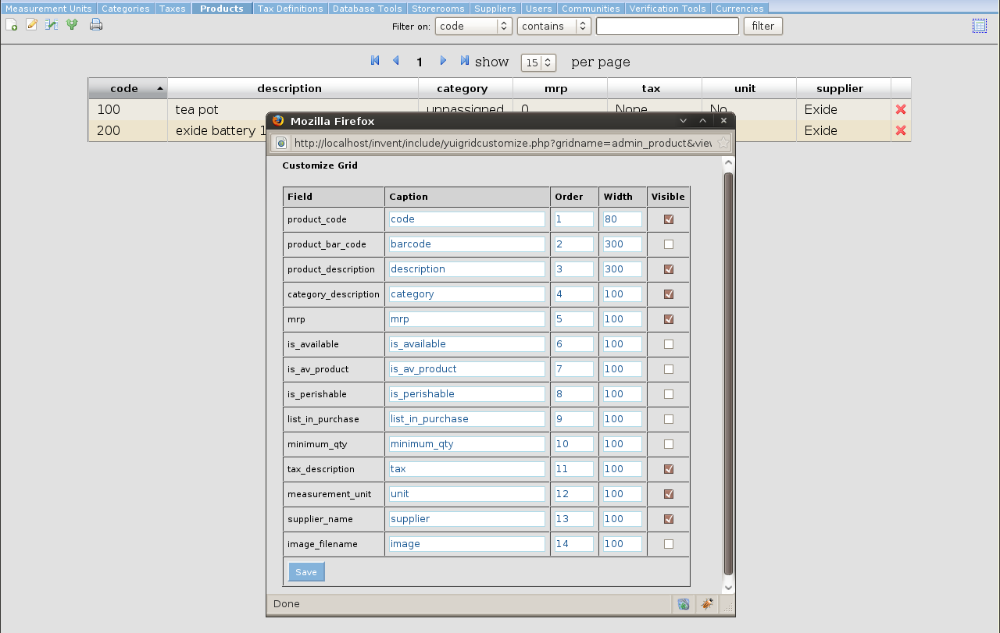

The menu bar

In most grids, the first icon will open a window to create a new record, and the second one will open a window to edit the details of the currently selected row in the grid.
The print icon will open a new window with the contents of the grid in plain format, and the print dialog will open automatically.
In general, it is better to set the page orientation to landscape.
In the center there will almost always be the filter control: In the first drop down, select the field on which you want to apply the filter. In the second filter, select the filter type: "contains", "equals" or "starts with". In the text field enter the your filter criteria and press the ENTER key on your keyboard, or click the filter button.
The right-most icon will open a window to customize the grid, as in the image below:

In this window you can specify the caption for each column, the order in which it should appear, the width and whether it is visible or not. The print window will also reflect the settings specified here. Click save to apply your changes, and close the window. To see the changes, refresh the grid by either clicking the "Filter" button, or by clicking the menu tab.